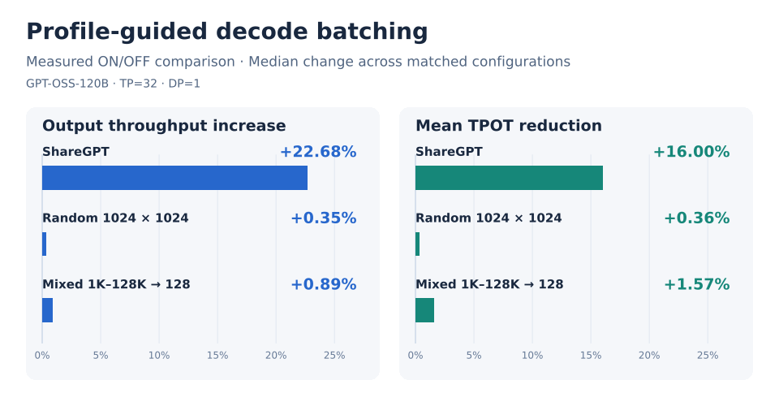

Furiosa SDK Release 2026.4.0#
We are happy to announce the release of Furiosa SDK 2026.4.0.
This release significantly improves overall performance through experimental NPU sampling, profile-guided decode batching, reduced runtime overhead, and compiler optimizations. Compared with the 2026.3.0 performance baseline (including early beta measurements), token-generation performance per watt (output tok/s/W) improved by 2–138% across the 18 models with prior measurements. The largest gains were seen in MoE models, including GPT-OSS-120B (+138%), GPT-OSS-20B (+57%), and Qwen3-30B-A3B (+43%).
The vision-language model support introduced in 2026.3.0 is now integrated with the regular FCFS scheduler, enabling continuous batching, batched vision encoding, and reuse of KV cache entries and encoded image embeddings across chat turns.
Building on the KVConnector interface introduced in 2026.3.0, this release adds experimental hierarchical KV caching (HiCache), including KV cache offloading. HiCache extends prefix reuse beyond NPU memory to host memory and optional external shared storage, with Mooncake as the first supported storage backend.
New model support includes Gemma 4 and EXAONE 4.5 with MTP. The pooling model lineup expands with BGE-M3, E5-Mistral, BGE Reranker v2 M3, and Harrier OSS v1 for embedding and reranking workloads. Existing model families gain additional variants, including Qwen3-VL 2B/4B and Mistral NeMo.
Finally, this release completes the migration from the deprecated legacy model artifact format to FXB-based model loading and execution.
If you are upgrading from 2026.3, please also read the 🚨 Breaking Changes & Deprecations section and the Upgrading FuriosaAI’s Software.
Highlights#
Hierarchical KV Cache Offloading#
Prefix caching avoids repeated prefill for long, shared contexts, but a conventional cache is bounded by NPU DRAM. Once a cached prefix is evicted, a later request must recompute it even if the same prefix was used only moments earlier.
2026.4 introduces an experimental hierarchical KV cache that expands prefix reuse beyond NPU memory. This release also replaces separate global-only and hybrid prefix-cache implementations with a unified radix tree implementation. Global-attention and sliding-window KV caches share the same prefix-matching and scheduling infrastructure while retaining independent cache management.
The hierarchical cache extends this unified foundation across three tiers:
L1 — NPU DRAM: the active, lowest-latency KV blocks used directly by attention.
L2 — host memory: evicted or proactively backed-up blocks are copied over DMA and can be reloaded instead of recomputed.
L3 — external storage: an optional backend retains prefixes beyond local process memory; a shared backend makes them reusable by other Furiosa-LLM replicas in the cluster.
L3 is storage-independent by design. A backend-agnostic KV cache connector interface separates cache management from backend-specific existence checks and data transfers. Additional storage systems can be integrated through this interface without changing the cache hierarchy. Mooncake is the first supported backend, providing content-addressed, cluster-wide prefix storage and asynchronous transfer outside the scheduler’s critical path.
Two write policies determine when KV cache is stored in L2:
Write-through: writes KV cache to L2 whenever it is stored in L1. Keeping an L2 copy allows L1 blocks to be reclaimed without an eviction-time transfer. This suits deployments with enough NPU-to-host bandwidth and host-memory capacity to maintain copies in both tiers.
Write-back: writes KV cache to L2 when it is evicted from L1. Deferring the copy reduces duplicate storage across the two tiers, making it useful when host-cache capacity is limited and more space is needed for evicted prefixes. The transfer can add eviction latency.
With either policy, the scheduler reuses the L1-resident portion of a matching prefix and reloads only its missing cached suffix. Offloading also works with hybrid global/sliding-window attention and intra-node pipeline parallelism. An experimental layerwise L2-to-L1 reload path can overlap host-to-NPU transfers with model execution; see Overlapping L2 Reload with Model Execution.
Enable the L2 tier by assigning a process-wide host-memory budget:
furiosa-llm serve <model> --experimental-kv-offload-host-memory-gb 64
Alternatively, --experimental-kv-offload-host-memory-ratio sizes L2 relative to each
model lane’s L1 KV capacity. --experimental-kv-offload-write-through-threshold controls
the promotion hit threshold (default: 2; 0 disables promotion), and
--experimental-kv-offload-write-back enables the additional write-back policy.
See Hierarchical Prefix Caching for policy and configuration details.
This feature is experimental and off by default. Its options are deliberately hidden
from furiosa-llm serve --help while the policy and defaults are being tuned. With the
backend included in 2026.4, L3 requires a compatible Mooncake deployment and shared-library
installation; see Using Mooncake with Furiosa-LLM for setup and namespace configuration.
Optimized Multimodal Serving#
The vision-language support introduced in 2026.3 now runs end to end on the regular FCFS scheduler. This unifies text-only and image-and-text requests under the same scheduling, prefix-cache, and data-parallel infrastructure instead of a separate proof-of-concept loop.
Multimodal request processing has been optimized in three areas:
Batched vision encoding: images from multiple requests can be encoded together to improve throughput under concurrent load.
Overlapped image preparation: image preparation on the host can overlap with NPU text generation for other requests, reducing NPU idle time.
Image embedding reuse: cached image embeddings can be reused across conversation turns and data-parallel (DP) workers, avoiding repeated vision encoding for the same image.
These improvements apply to all currently supported vision-language models, including Gemma 4, Qwen3-VL, and EXAONE 4.5. See Vision-Language Models for details.
Expanded Model and Pooling Coverage#
2026.4 substantially broadens both generation and retrieval workloads:
Qwen3-VL — new 2B and 4B Instruct/Thinking models, alongside the existing 32B family.
Qwen3 Embedding — new 0.6B and 4B models, alongside the existing 8B model.
Qwen3 Reranker — new 0.6B and 4B models, alongside the existing 8B model.
Harrier OSS v1 — the 0.6B multilingual, instruction-aware text embedding model.
Mistral NeMo — the 12B
Mistral-Nemo-Instruct-2407-FP8text-generation model.Llama 3.1 and Llama 3.3 — dynamically quantized FP8 variants.
BGE-M3 — a multilingual dense-embedding model.
BGE Reranker v2 M3 — a multilingual cross-encoder.
E5-Mistral — the instruction-aware
E5-Mistral-7B-Instructembedding model.Gemma 4 — the 31B vision-language model supporting text and image input.
EXAONE 4.5 — the 33B vision-language model supporting text and image input.
Consult Supported Models for the models that FuriosaAI publishes and validates.
Profile-Guided Decode Batching#
Profile-guided decode batching uses actual NPU execution and I/O costs measured through profiling to optimize decode batches and bucket selection for requests with different context lengths. Originally introduced as an opt-in feature in 2025.3.0, it is now enabled by default for generative models in 2026.4.0 following performance improvements and stabilization.
According to GPT-OSS-120B benchmarks (TP=32, DP=1), enabling the feature increased ShareGPT output-token throughput by a median 22.7% and reduced mean time per output token (TPOT) by a median 16.0% across 20 matched configurations. These combine five concurrency levels (16, 32, 64, 128, and 256) with prefix caching on/off and overlap scheduling on/off (5 × 2 × 2). Each configuration compares the feature enabled and disabled under otherwise identical conditions. Results vary by workload.


On the first model load, profiling may take 1–2 minutes. Subsequent loads reuse compatible
cached profiles. To disable profiling and profile-guided batching, pass
--no-profile-guided-decode-batching to furiosa-llm serve.
See Profile-Guided Decode Batching for configuration details.
Faster Token Sampling#
Token sampling selects the next token from the logit scores produced by the
model’s forward pass, using greedy selection or random sampling controlled by
top_k and top_p. The selected token becomes the input to the next decode step, making
sampling part of the critical path for time per output token (TPOT).
Furiosa SDK 2026.4.0 introduces two major improvements to this process.
First, CPU sampling uses a faster algorithm for top-k and top-p filtering. Inspired by Qrita, it uses SIMD instructions to estimate the distribution of BF16 logits and narrow the candidate set before exact selection. It relaxes the threshold when necessary to retain enough candidates. Packed integer comparisons and partial selection further reduce top-p filtering overhead. These optimizations are enabled by default and require no additional configuration. Greedy sampling uses a separate argmax path.
In benchmarks using logits from GPT-OSS-20B and EXAONE 4.0 models, top-k/top-p
filtering was 2.7–13.2× faster. In a separate ShareGPT benchmark with
top_k=50 and top_p=0.9, output-token throughput improved by 6.9–16.9%
and mean TPOT fell by 6.5–15.4% across concurrency levels from 16 to 256.
Results depend on the model, logit distribution, and workload.
Second, NPU sampling runs the token-selection algorithm directly on the NPU. When no request in the batch needs logits on the host, this avoids transferring the full vocabulary logits to host memory. Batched NPU execution also parallelizes token selection across requests, reducing CPU sampling work for larger batches.
In a microbenchmark with Qwen3-MoE at batch size 128, NPU sampling path optimizations reduced the delay between the forward pass and NPU sampling from over 1 ms to about 200 µs, and host processing of sampled tokens from over 600 µs to about 100 µs per decode iteration.
Default FXB builds for all currently supported generative models include sampling kernels. NPU sampling is experimental and disabled by default. Enable it explicitly with:
furiosa-llm serve <model> --experimental-enable-npu-sampling
NPU sampling works with eager and overlap scheduling, subject to the model’s scheduling restrictions, and cannot be combined with speculative decoding. See Experimental NPU Sampling for configuration and Overlap Scheduling for compatibility.
Complete Migration to FXB#
Furiosa SDK 2026.4.0 removes support for the deprecated legacy artifact format. Compiled NPU kernels for all supported models are now provided through Furiosa Executable Bundles (FXB).
Introduced in 2026.3.0, FXB packages compiled kernels and their metadata in a single file, separate from model weights. Models can start without compiling kernels on the serving host, and bundles can be copied, cached, or published with a model. Compatible fine-tuned or weight-updated models can reuse the same FXB without recompiling.
We will continue to improve FXB tooling to make model compilation and the reuse and distribution of compiled kernels easier. See Furiosa Executable Bundles (FXB) for details on building, serving, and reusing bundles.
The complete list of changes in this release is summarized in the All Changes section below.
All Changes#
Furiosa-LLM#
Major Features & Improvements#
Hierarchical KV Cache (experimental)
Added a hierarchy-aware radix cache spanning NPU DRAM (L1) and host memory (L2), with asynchronous DMA offload, reload, capacity accounting, and on-demand eviction.
Added proactive write-through and optional eviction-time write-back policies so useful prefixes can survive NPU-cache reclamation.
Reloads can combine an existing local prefix head with a longer cached suffix, avoiding both redundant transfer and prefill recomputation.
Added auxiliary/sliding-window KV offload and reload, including alignment to sliding- window boundaries and all-sliding-window model support.
Enabled L1/L2 offloading with intra-node pipeline parallelism.
Added opt-in layerwise L2-to-L1 reload overlap to hide host-to-NPU transfer latency behind model execution.
Added a separate L3 host-staging budget through
--experimental-kv-offload-staging-memory-gb(default: 24 GiB).Added a Mooncake-backed L3 tier for cross-process and cluster-wide prefix reuse, including namespace isolation, write-through backup, full and partial-prefix prefetch, and asynchronous cross-process transfer.
Mooncake libraries are loaded at runtime with
dlopen. They are not linked into or bundled with the Furiosa-LLM wheel; a missing library degrades to L2-only operation.
Speculative Decoding (experimental)
Replaced the dual-scheduler prototype with a single FCFS scheduler that owns target and draft model lanes and verifies draft tokens in batches.
Added the hidden JSON option
--experimental-speculative-config(alias--experimental-spec-config) and matchingLLMconfiguration for external draft models and embedded multi-token prediction (MTP).Added tokenizer, model-interface, tensor-parallel, bucket-capacity, and I/O-memory validation for target/draft pairs.
Added initial self-speculation support for vision-language models with identical target and draft layouts.
Added optional MTP kernel compilation to EXAONE 4.5 FXB builds.
fxb buildenables it when the model preset and kernel plan support it; pass--no-enable-mtpto omit it.Integrated EXAONE 4.5 MTP into serving and enabled prefix caching for both external draft-model and MTP decoding.
Support remains limited: speculative decoding cannot be combined with overlap scheduling, hierarchical KV offloading, PD disaggregation, NPU sampling, structured output, or log-probability requests. MTP currently supports text tokens with pipeline parallelism 1; MTP prefix caching cannot be combined with aggressive batching.
Multimodal Serving
Moved Qwen3-VL text-only and image-and-text serving to the standard FCFS scheduler and DP routing path.
Added vision-encoder batching and separate encoder/decoder NPU task queues.
Added a two-phase acquire-and-encode/generate flow to reduce NPU idle time.
Added content-derived media IDs and an encoded-embedding registry, allowing repeated images to reuse both preprocessing results and NPU-generated vision embeddings.
Integrated multimodal token pinning with prefix-cache insertion and eviction.
Fixed mRoPE offset computation, chunked-prefill aborts, and multimodal requests using repetition penalty, minimum length, and prompt-logprob sampling parameters.
Model Support
Added Qwen3-VL 2B and 4B, including Instruct and Thinking variants.
Added Qwen3-Embedding 0.6B/4B/8B and Qwen3-Reranker 0.6B/4B/8B FXB serving.
Added Harrier OSS v1 0.6B embeddings.
Added Mistral-Nemo-Instruct-2407-FP8.
Added dynamically quantized FP8 Llama 3.1 8B and Llama 3.3 70B variants.
Added BGE-M3, BGE-reranker-v2-m3, E5-Mistral-7B-Instruct, EXAONE 4.5 33B, and Gemma 4 31B.
Engine Core#
Loading and Memory Efficiency
Load model weights for DP instances in parallel.
Deduplicate shared ModelBuffer uploads such as RoPE caches across EDFs.
Generate metadata for profile-guided decode batching about five times faster for large MoE models by reducing redundant scheduler-estimation quantization steps.
Let the runtime estimate I/O-buffer memory by default in both
LLMand serving paths; explicit--max-io-memory-mbvalues remain available.Size peer-DRAM windows from the device mesh and preserve explicit I/O-memory settings on the FXB path.
Scheduling and Distributed Serving
Improved profile-guided decode batching using measured compute and input-transfer costs, with cached startup profiles and a configurable scheduler CPU budget.
Improved strict batch composition and moved non-critical result processing out of the overlap scheduler’s NPU dispatch path. See Overlap Scheduling.
Added prefix-cache-aware admission estimates, on-demand eviction, and additional long-context radix-cache optimizations.
Added the initial PD-disaggregation connector lifecycle, admission signal, cancellation handling, and dedicated correctness tests. The public serving workflow remains experimental. Added batched completion routing, layer-group DMA/network transfer pipelining, and 1 GB payload chunking for large KV transfers. Mooncake-backed PD integration remains in development.
Enabled intra-node pipeline parallelism on the FXB path.
Sampling
Accelerated CPU
top_k/top_psampling with distribution-aware candidate pruning and packed integer ordering.Fixed BF16 cumulative-probability precision during top-p sampling.
Added experimental NPU sampling across supported generative models, including structured-output masks and host fallback for output log-probability requests.
Reduced host sampling-loop overhead and skipped unnecessary logits transfers when all requests in a batch can be served by the NPU sampler.
API & Usability Improvements#
Responses API:
Added
/v1/responsessupport for gpt-oss through the Harmony output path, including multi-turn and tool-calling fixes.Added
structured_outputsto Responses requests, with explicit conflict errors whentool_choice,response_format, andstructured_outputscompete.Improved gpt-oss output refinement using xgrammar structural tags.
Structured Output and Reasoning:
Reasoning and final-content constraints now use independent structured-output states and may select different backends.
Fixed cancellation races involving structured grammars and the Python frontend.
Added Gemma 4 reasoning and tool-call parsers and fixed streaming output handling.
Added required and named tool choices for gpt-oss. See GPT-OSS limitations for conditions where reasoning is not returned.
Added the
qwen3_xmltool-call parser (aliasqwen3_coder) and output refinement for Qwen3-Coder auto tool calls.
Sampling API:
Added
stopandinclude_stop_str_in_outputtoSamplingParamsfor online and offline generation. Stop-string matches reportfinish_reason="stop"and expose the matched value instop_reason.Disabled tokenizer whitespace cleanup in incremental decoding so generated whitespace is preserved faithfully.
Serving and CLI:
--max-model-lennow actively caps prompt-plus-generation context length, is reflected by/v1/models, and can improve admission concurrency for requests that omitmax_tokens. See Limiting the Context Length.Added embedding, score, and rerank endpoint support for the expanded pooling-model set.
Lazy-loaded heavy Python dependencies, making help and version commands nearly instantaneous.
Improved FXB inspection and build summaries, including MTP and vision-encoder kernels.
Added model-aware multimodal processing options and request-level overrides through
media_io_kwargsandmm_processor_kwargs; see Multimodal Options.
Bug Fixes#
Fixed gpt-oss parsing in multi-turn tool-calling conversations and multi-turn Responses API requests.
Fixed hierarchical-cache admission deadlocks, auxiliary-cache reload alignment, partial prefix reuse, and prefix-router mirror consistency.
Fixed vision-language sampling panics and multimodal position-offset handling.
Fixed stop-string cancellation cleanup and structured-output cancellation races.
Fixed host-memory exhaustion when calculating prompt log probabilities for long contexts.
Fixed a repetition-penalty regression so each distinct token is penalized once, avoiding repeated penalties that could produce invalid logits and sampling failures.
Fixed automatic FXB discovery to select the latest bundle compatible with the runtime IR revision.
Improved telemetry export performance and fixed telemetry memory leaks.
Device Runtime#
Migrated generator execution to device-runtime2, expressing compute and DMA as explicit stream operations with event-based dependencies.
Reduced stream-operation host overhead, removed a redundant host buffer pool in favor of the runtime’s DMA-BUF interface, and eliminated unnecessary DMA synchronization brackets and compute-stream launch barriers.
Updated hierarchical device-ID handling and fixed device-runtime memory leaks and vision-language NaN failures through dependency updates.
Driver#
Fixed DMA-BUF allocation failures when transfer descriptor arrays exceed 4 MiB, and corrected peer-to-peer address mappings for remote device memory.
Fixed intermittent firmware-update timeouts and improved stability when pending device commands are cancelled.
Removed the deprecated
pert_versionsysfs attribute. Custom monitoring scripts that read this attribute must be updated.
Firmware#
Fixed intermittent firmware-update timeouts and improved update-command compatibility with older firmware versions.
Added correctable and uncorrectable ECC error counts to firmware diagnostic reports.
🚨 Breaking Changes & Deprecations#
RNGD driver update required:
Furiosa SDK 2026.4 requires the 2026.4.0 RNGD driver. Upgrade
furiosa-driver-rngdbefore starting Furiosa-LLM 2026.4; keeping a 2026.3.x driver can cause incorrect results or runtime failures.Migration: Follow Upgrading FuriosaAI’s Software to update the driver and verify the installed version before restarting your serving workloads.
Legacy model artifacts and
furiosa-llm buildremoved:The v2 artifact path based on
furiosa-modelsand the model rewriter has been removed. Furiosa-LLM now loads models through the FXB runtime only.Migration: Replace
furiosa-llm build <model> ...withfxb build <model> <output>.fxb. Serve a local bundle withfuriosa-llm serve <model> --fxb <output>.fxb, or use afuriosa-aiHugging Face repository that already publishes a compatible FXB.
Deprecated serve-time bucket flags removed:
The previously deprecated
--max-batch-size,--min-batch-size,--max-prompt-len,--prefill-buckets/-pb, and--decode-buckets/-dboptions have been removed fromfuriosa-llm servein 2026.4.0.Migration: Remove these options from server launch scripts. Select buckets when running
fxb build. For runtime scheduling limits, use--max-concurrencyand--max-num-batched-tokensas appropriate.
Obsolete beam-search parameters removed:
use_beam_search,best_of,length_penalty, andearly_stoppinghave been removed fromSamplingParamsand the compatible request models. Beam search has not been supported since SDK 2026.1.Migration: Remove these fields and use greedy or random sampling parameters such as
temperature,top_k, andtop_p.
The following CLI and Python configuration changes also require updates to existing launch scripts and applications:
Previous option or setting |
Change in 2026.4 |
Migration |
|---|---|---|
|
Renamed without compatibility aliases. |
Use |
|
Removed; tensor parallelism is fixed by the loaded FXB. |
Select the degree with |
|
Removed unused scheduler setting. |
Remove it from CLI arguments, |
|
Removed unused engine-level seed configuration. |
Remove these arguments from engine initialization. |
|
Explicit values must be positive integers. |
Replace zero or negative values with a positive limit, or omit the setting. |
Experimental aggressive batching with an explicit |
Unsupported combinations are rejected. |
Omit |
📦 Released Components#
Python packages#
Package name |
Version |
Supported architectures |
|---|---|---|
furiosa-kernels |
2026.4.0 |
pure Python ( |
furiosa-kernels-contrib |
2026.4.0 |
pure Python ( |
furiosa-llm |
2026.4.0 |
pure Python ( |
furiosa-llm-native |
2026.4.0 |
|
furiosa-native-llm-common |
2026.4.0 |
|
furiosa-tcc |
2026.4.0 |
|
furiosa-torch |
2026.4.0 |
|
furiosa-smi |
2026.4.0 |
|
APT packages#
Package name |
Version |
Supported architectures |
|---|---|---|
furiosa-driver-rngd |
2026.4.0 |
|
furiosa-firmware-image-rngd |
2026.4.0 |
|
furiosa-firmware-tools-rngd |
2026.4.0 |
|
furiosa-smi |
2026.4.0 |
|
furiosa-metrics-exporter |
2026.4.0 |
|
furiosa-cdi |
2026.4.0 |
|
YUM packages#
Package name |
Version |
Supported architectures |
|---|---|---|
furiosa-driver-rngd |
2026.4.0 |
|
furiosa-firmware-image-rngd |
2026.4.0 |
|
furiosa-firmware-tools-rngd |
2026.4.0 |
|
furiosa-smi |
2026.4.0 |
|
furiosa-metrics-exporter |
2026.4.0 |
|
furiosa-cdi |
2026.4.0 |
|